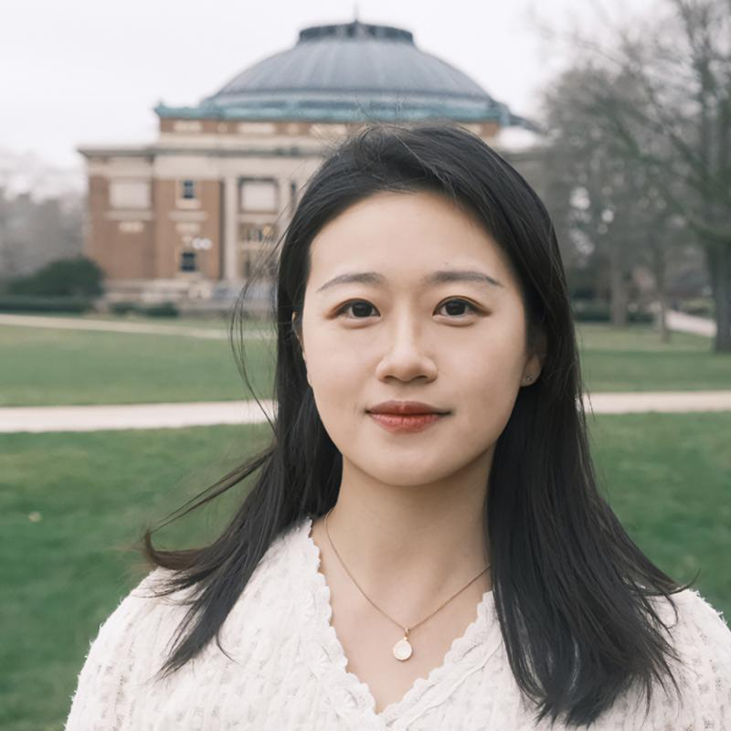
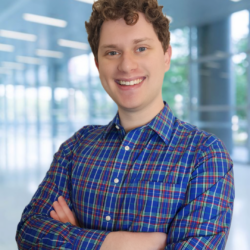
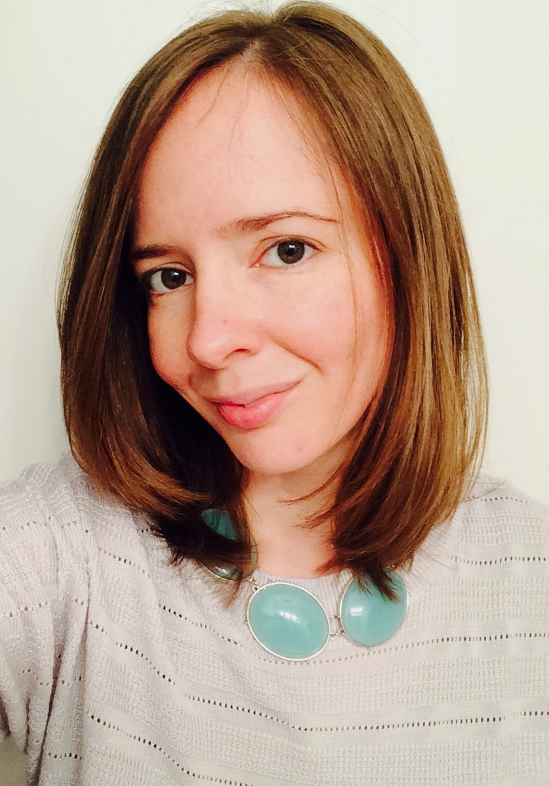
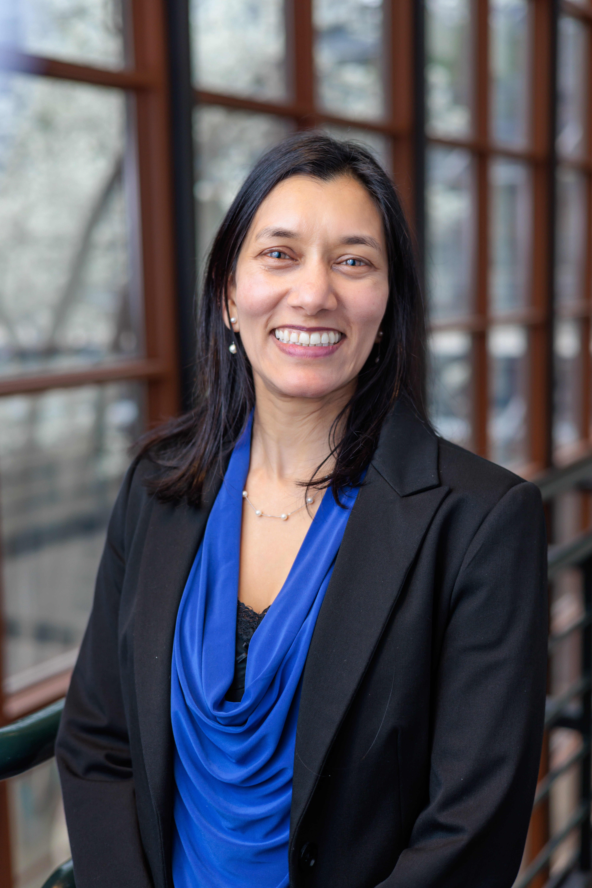

Overview
Generative AI (GenAI) systems are increasingly woven into young people's everyday lives, shaping how they learn, communicate, create, seek support, and understand themselves. For youth with disabilities and neurodivergence, these systems may offer meaningful opportunities for communication support, low-pressure social interaction, personalized learning, and self-expression.
These benefits are closely tied to new and uneven risks. AI systems may misunderstand disabled and neurodivergent users, reproduce stereotypes, encourage emotional overreliance, or rely on safeguards that are inaccessible, privacy-invasive, and overly surveillant. These concerns sit at the intersection of accessibility, youth digital safety, usable security and privacy, and AI ethics, yet they are rarely studied together. This gap matters because inaccessible or poorly designed safeguards can themselves become sources of harm.
In this half-day virtual workshop, we invite researchers, practitioners, designers, educators, advocates, and youth to examine what safe and accessible AI should mean for youth with disabilities and neurodivergence. Through shared discussion and collaborative activities, the workshop will identify key risks, design tensions, and methodological challenges, while beginning to build a shared research and design agenda for this emerging area.
Workshop Goals
The workshop brings together researchers and practitioners from accessibility, HCI, youth online safety, child-computer interaction, security and privacy, education, child development, AI ethics, and policy. Through lightning talks, scenario-based discussions, stakeholder mapping, and collaborative synthesis, participants will identify key challenges, develop shared principles, and outline future research directions.
Important Dates
- Submissions Due: TBA
- Notification of acceptance: TBA
- Pre-attendance survey due: TBA
- Workshop at ASSETS 2026: During ASSETS 2026 (October 25–28, 2026) · Vila Nova de Gaia, Portugal · Half-day virtual
Guiding questions:
- Defining youth AI safety for all. What does "safe AI" mean specifically for youth with disabilities and neurodivergence, and how does it differ from safety as defined for a general user?
- Understanding youth–AI interaction. How do youth with disabilities and neurodivergence actually use AI tools today, and what access needs do those uses reveal?
- Identifying risks and opportunities. Which AI risks fall differently or more heavily on youth with disabilities and neurodivergence than on other users?
- Designing safeguards. What would an accessible safeguard look like, and how do we keep it from undermining youth autonomy?
- Studying the population. What methods let us study youth–AI interaction in this population ethically and accessibly?
- Building shared resources. What single shared resource (e.g., a scenario library or evaluation rubric) would most advance this agenda, and could we start it at the workshop?
Call for Participation
This half-day virtual workshop convenes researchers, practitioners, designers, educators, advocates, and youth to build a shared research and design agenda for safe and accessible AI. We invite participation based on a short submission, and you can choose the format that fits you best.
Topics of interest include (but are not limited to):
- How youth with disabilities and neurodivergence use GenAI in home, school, peer, and online contexts
- Risks that fall differently or more heavily on disabled and neurodivergent youth (e.g., stereotyping, emotional overreliance, overtrust)
- Accessible safeguards, age assurance, and safety mechanisms that do not exclude or over-surveil
- Privacy, data exposure, and consent for youth with disabilities and neurodivergence
- Participatory and community-led methods that study youth with them rather than about them
- Design principles for AI that supports communication, learning, and self-expression
- Policy, governance, and multi-stakeholder collaboration at the intersection of accessibility and youth AI safety
Submission Guidelines
We invite position papers of 2–4 pages in the ACM single-column format, articulating the submitter's perspective, experience, research, or design position relevant to the workshop theme. We also welcome non-traditional submissions (for example, from youth, advocates, and community partners). A small number of participants may join via a brief registration-of-interest form without a position paper, so that community members and youth whose contribution is experiential rather than academic can take part.
Submissions are reviewed by the organizing team for relevance, diversity of perspective, and potential to contribute to discussion. At least one author of each accepted submission must register for and attend the workshop. We target a minimum of 10 and a maximum of approximately 30 participants. Accepted position papers and artifacts will be shared on the workshop website.
Accessibility
Accessibility is central to this workshop's design. The event is fully virtual to lower participation barriers, and the schedule includes two longer breaks to reduce fatigue and support sustained participation. Participants may contribute through live voice, text chat, pre-recorded video, or written comments, and activities are designed to work for participants who cannot speak live. We collect accessibility needs at registration so we can accommodate requests before the event, and we share materials as Markdown files.
Organizers

Yaman Yu
University of Washington, USA
Diana Freed
Brown University, USA

Jake Chanenson
University of Chicago, USA

Jessica Vitak
University of Maryland, USA
Sheena Erete
University of Maryland, USA

Tamara Clegg
University of Maryland, USA

Marshini Chetty
University of Chicago, USA
Contact
For questions about the workshop or submissions, please contact the organizers at:
yamanyu2@illinois.edu · diana_freed@brown.edu
Please include "ASSETS 2026 YouthxAI Workshop" in the email subject line.